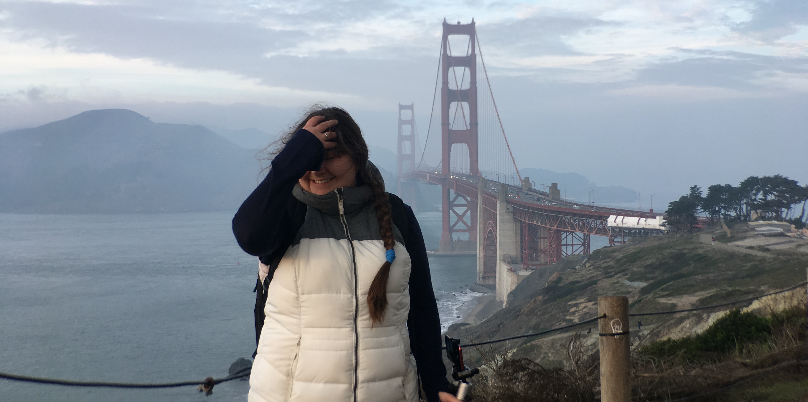

Welcome to my page!
Hi, I'm
Olga Kondratenko
Machine Learning Engineer
I am a Machine Learning Engineer with 4+ years of experience developing AI and software solutions for healthcare and medical imaging. My work combines machine learning, computer vision, scientific computing, and software engineering to build practical solutions for complex real-world problems.
I have experience working with deep learning, 3D medical image analysis, DICOM imaging workflows, healthcare data, and AI-assisted clinical applications, with a focus on turning research and ideas into reliable, production-ready software.
Explore my experience, projects, and technical work to learn more about my journey.
You can find my cv and certifications at the end of this page or by following the link to my cv here.MLDL Solutions
AI ML Engineer
Excited about a new chapter in my career, taking on a new role and new responsibilities.
Smith+Nephew
Software Engineer
Robotics R&D Department
Joines new development team and worked on assisted surgery robot sowtware and infrastructure.
Visionaire R&D Department
Started my professional career and gained several years of experience working in the medical device industry on Visionaire patient care software including preoperative plan automation, imaging review software, internal medical imaging and metadata workflows, FDA 510k submissions and more.
Graduated 🎓
University of San Francisco
Successfully completed my MSCS degree and graduated from the program.
University of San Francisco
Master of Science in Computer Science
Studied Computer Science and built the foundation for my professional career.
MLDL Solutions
AI Solutions Developer
Developing an independent initiative focused on creating practical AI and machine learning solutions for small businesses. Exploring ways to help businesses apply AI to real-world challenges through automation, data analysis, and intelligent software solutions.
Currently focused on developing the technical foundation, identifying practical business applications, and building solutions that make AI more accessible to small organizations.
Company 1
Software Engineer — R&D
Built software for medical device and healthcare applications across two R&D teams, progressing from medical imaging and patient care software to assisted surgery robotics. Gained experience developing production software for regulated medical environments and working across imaging, clinical workflows, software infrastructure, and robotic surgery systems.
Visionaore R&D Department
Started my professional career developing software for the medical device industry, contributing to Visionaire patient care software and related medical imaging workflows. Worked on preoperative plan automation, imaging review software, internal medical imaging and metadata workflows, and software supporting FDA 510(k) submissions.
Robotics R&D Department
Joined a new development team focused on assisted surgery robotics. Worked on software and infrastructure supporting robotic surgery systems, contributing to the development of new software capabilities and the underlying systems needed to support the platform.
Graduated 🎓
Master of Science in Computer Science
Completed my M.S. in Computer Science, building a strong foundation in machine learning, data analysis, software engineering, and scientific computing.
University of San Francisco
Master of Science in Computer Science
Completed my M.S. in Computer Science while gaining hands-on experience through research, technical roles, and machine learning projects focused on data analysis, deep learning, geospatial data, and software development.
During my graduate studies, I combined academic research with hands-on technical experience across machine learning, scientific computing, software engineering, and data visualization.
AI Researcher — MAGICS Lab
Group Research Project · Part-time / VolunteerConducted research in geospatial AI and predictive modeling, developing machine learning approaches for wildfire progression forecasting using satellite imagery, topographic data, and environmental datasets.
Teaching Assistant
Supported students in software engineering and programming courses through technical mentoring, office hours, and assignment development. Developed automated unit tests to improve feedback and code quality.
Systems Administration Assistant
Supported university teaching and research laboratories by installing, configuring, and maintaining Linux, Windows, and macOS systems. Troubleshot hardware and software issues and helped maintain reliable laboratory environments.
Hurricane Trajectory Projection
Deep Learning & Geospatial Data AnalysisDeveloped a deep learning model using TensorFlow to predict hurricane trajectories by integrating historical meteorological and oceanic data. Built a high-performance CUDA-enabled training environment and performed extensive feature engineering and exploratory data analysis on large-scale datasets.
Sentiment Analysis of Open-Source Communications
Constructiveness & Inclusiveness Evaluator · MSCS Thesis Group ProjectDeveloped a multi-service web application for analyzing GitHub communication trends. Built machine learning models to evaluate communication metrics such as constructiveness and inclusiveness, with a Flask and PostgreSQL backend and Docker-based deployment.
Projects
Sentiment Analysis of Open-Source Communications
Constructiveness & Inclusiveness Evaluator · MSCS Group Project
Developed a web application for analyzing communication within open-source GitHub projects. The application evaluates communication using metrics related to constructiveness and inclusiveness.
Python · Scikit-Learn · NLTK · Flask · PostgreSQL · Docker
Hurricane Trajectory Projection
Deep Learning & Geospatial Data Analysis
Developed a deep learning model for predicting hurricane trajectories by integrating historical meteorological data with oceanic variables. Built a CUDA-enabled training environment and performed feature engineering and exploratory data analysis on large-scale datasets.
TensorFlow · CUDA · Python · Pandas · NumPy · Matplotlib · Scikit-Learn
Result: Reduced model training time by approximately 70% through GPU acceleration.
Data Visualization
A collection of data visualization work developed during my studies, including interactive visualizations, statistical analysis, and geospatial data exploration.
Data Visualization Assignments
Final Data Visualization Project
Sea Battle
Web Game — Backend
Individual software engineering project focused on developing the backend of a web-based Sea Battle game, including game logic for a player competing against the computer.
About Me

Welcome to my page! I'm Olga Kondratenko, I'm a master of
science in computer science graduate,
University of San Francisco, San Francisco, California.
During my academic years I found a new passion in the
Computer Science field: Artificial Intelligence includding
Machine Learning and Deep Learning. Since then I'm learning
and working hard towards my new goal:
to become a successful Software AI/ML Engineer!
Things I like to spend my time on:
- Creating my First Cozy Sim Game Alone
- Clean Code by Robert Martin
- Worring about my family and friends as there is a full scale russo-Ukrainian war in Ukraine
- Data Is Beautiful
- Deep Learning Book
- One of the Best Authors Ever
- Elden Ring
- Dark Souls Series
- Saga o Wiedźminie
Diploma and Certifications
MSCS Diploma
SIIM: Reporting Doesn’t Have to Be Another Sys: A More
SIIM: Global Health AI for Radiology
SIIM: Validation and Regulatory Landscape of AI Models
SIIM: Transformers & BioNLP: Transforming Words into Care
ISTQB Foundation Level Certificate
Contact
If you want reach out to me, feel free to connect or send me a message to olga.kondr.ko@gmail. com !
My CV